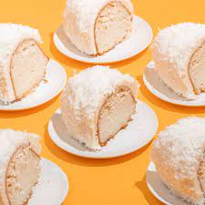
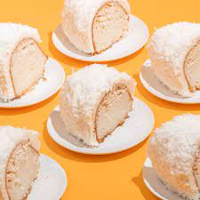

07/Jan
Coconut Bundt Cake with White Chocolate-Coconut Glaze

Last week flew by and before I knew it, it was time to plan the menu for
Sunday dinner. Sundays have been a perfect opportunity for me to experiment with new
dessert recipes, especially those that serve tons of people, since we have help
polishing it all off and don’t have it sitting around the house, tempting us for days.
I love anything with coconut during the spring and summertime, and Bundt cakes are
not only easy but they’re pretty and are perfect for serving a crowd. When I started
flipping through a couple of my newer cookbooks and saw a recipe for a coconut
Bundt cake, dessert was immediately decided.
This cake comes pretty darn close to a coconut pound cake, as there is quite a bit of
butter, sugar and eggs that help to create a wonderfully rich and moist cake. The
coconut flavor is derived from a large amount of coconut milk in both the cake and
glaze, as well as a healthy dose of coconut extract. I also added toasted shredded
coconut on top of the glaze because, well, I feel like any type of coconut dessert
needs to be topped with toasted coconut.
A couple of years ago, a coconut cake would have never ranked high on my list of
cake options, but between the coconut cupcakes I made last year and this cake, I am
a total coconut convert.
Plus, after everyone went home yesterday, we were only left with two small pieces of
cake. Win-win!
.jpeg) 

.jpeg)